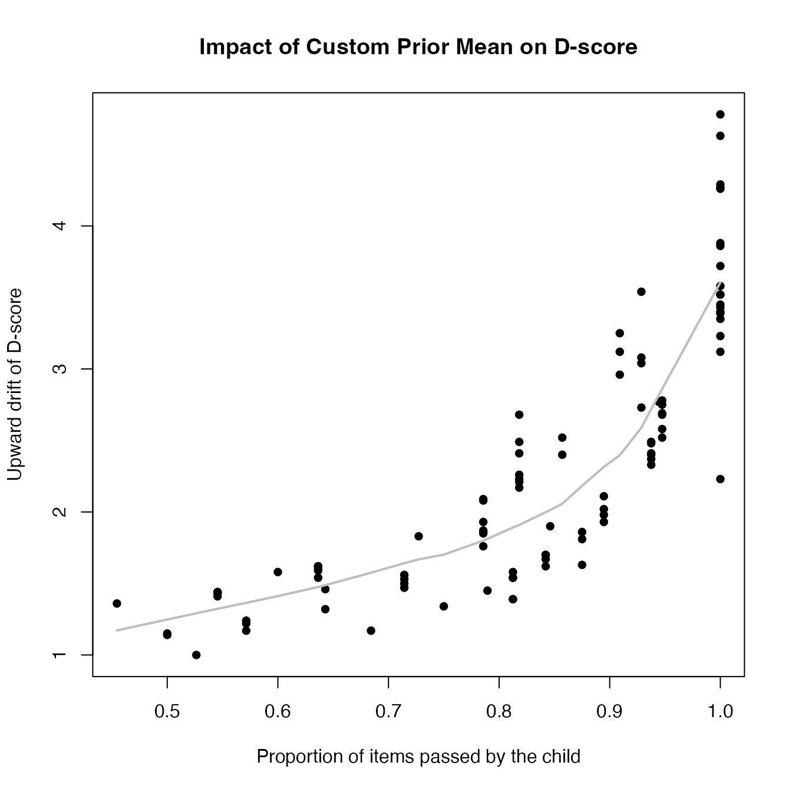
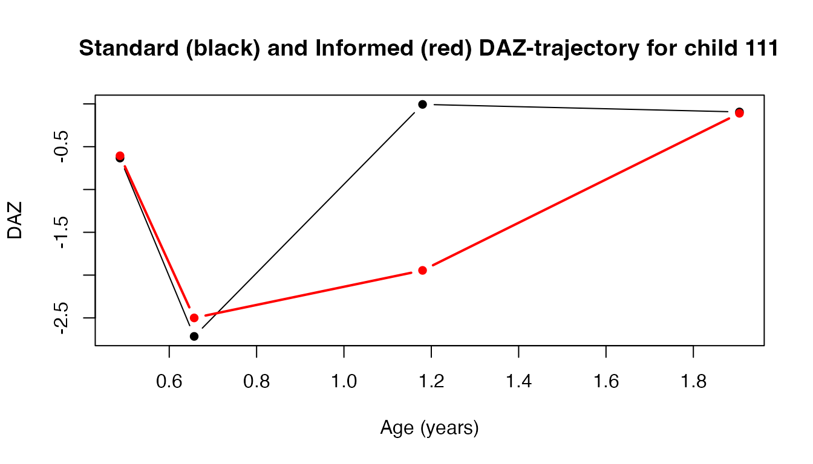

This vignette provides an overview of the default prior settings and demonstrates how to customize the prior mean and standard deviation for D-score calculations. This is an advanced topic that requires a basic understanding of the D-score calculation process. If you are unfamiliar with the D-score methodology, we recommend reviewing the introductory vignettes before proceeding.
The default prior mean and standard deviation for the
dscore() function are determined by the key
argument. This function searches for the corresponding
base_population field in the builtin_keys data
frame, which contains several columns including the following:
## key base_population
## 1 dutch dutch
## 2 gcdg gcdg
## 3 gsed1912 gcdg
## 8 293_0 phase1
## 10 gsed2212 phase1
## 11 gsed2406 preliminary_standardsFor instance, for key = gsed2406, the
base_population is identified as
"preliminary_standards". The get_mu() function
returns the prior mean for the specified key at different
ages:
## [1] 9.731266 14.922704 19.282654 23.155214 26.707086 30.031809 33.187157
## [8] 36.211330 39.130903 41.965115 45.158164 47.235287 49.186179This code snippet returns the prior mean for ages ranging from 0 to
12 months. These mean values represent the median of the D-score
distribution for the specified base_population under the
current key.
If the standard deviation of the prior is not specified, the
dscore() function defaults to a value of 5.0 across all
ages. In comparison, the age-specific standard deviation for the
base_population averages around 2.5 to 3.5. Therefore, a
standard deviation of 5.0 signifies a relatively broad prior
distribution, regardless of age.
It’s crucial to note that altering the key parameter
changes both the prior mean and standard deviation. Since these
parameters affect the D-score, comparisons should generally be made only
between D-scores calculated using the same key, prior mean, and standard
deviation.
In certain situations, you may want to define your own prior mean and
standard deviation for the D-score calculations. This can be done by
setting the prior_mean and prior_sd arguments
in the dscore() function. Below are a few examples that
demonstrate how to customize these priors.
In this example, we add a value of 5 to the default prior mean for each child, which results in higher D-scores.
# Calculate the custom prior mean by adding 5 to the default prior mean
data <- milestones
mymean <- get_mu(t = data$age, key = "gsed2406") + 5
# Calculate default D-scores
def <- dscore(data)
head(def)## a n p d sem daz
## 1 0.4873 11 0.9091 30.76 3.751319 -0.633
## 2 0.6571 14 0.6429 29.06 2.518082 -2.716
## 3 1.1800 19 0.9474 53.35 3.414966 -0.006
## 4 1.9055 13 0.8462 63.88 2.971594 -0.094
## 5 0.5503 11 0.8182 28.75 3.476988 -1.863
## 6 0.7666 14 0.7857 34.21 3.088920 -2.377## a n p d sem daz
## 1 0.4873 11 0.9091 33.88 4.146874 0.310
## 2 0.6571 14 0.6429 30.38 2.629683 -2.423
## 3 1.1800 19 0.9474 55.93 3.774148 0.787
## 4 1.9055 13 0.8462 65.78 3.203216 0.438
## 5 0.5503 11 0.8182 31.43 3.840857 -1.155
## 6 0.7666 14 0.7857 36.30 3.395857 -1.867
# Custom prior, column specification
adj2 <- dscore(cbind(data, mymean), prior_mean = "mymean")
head(adj2)## a n p d sem daz
## 1 0.4873 11 0.9091 33.88 4.146874 0.310
## 2 0.6571 14 0.6429 30.38 2.629683 -2.423
## 3 1.1800 19 0.9474 55.93 3.774148 0.787
## 4 1.9055 13 0.8462 65.78 3.203216 0.438
## 5 0.5503 11 0.8182 31.43 3.840857 -1.155
## 6 0.7666 14 0.7857 36.30 3.395857 -1.867
identical(adj1, adj2)## [1] TRUEIn this code, the prior_mean argument shows two forms.
The first form directly specifies the custom prior mean, while the
second form refers to an additional column in the data frame that
contains the user-specified prior means. Both specifications yield
identical results. In addition, the user can specify a scalar value for
the prior_mean argument, which will be applied to all
observations, but this option is unreasonable if ages vary across
observations.
The next snippet compares the adjusted and default D-scores as a function of the proportion of items passed by the child.
# Plot the difference between adjusted and default D-scores
plot(y = adj1$d - def$d, x = def$p,
xlab = "Proportion of items passed by the child",
ylab = "Upward drift of D-score",
pch = 16, main = "Impact of Custom Prior Mean on D-score")
# Add a smoothed line to visualize the trend
lines(lowess(x = def$p, y = adj1$d - def$d, f = 0.5), col = "grey", lwd = 2)
The plot illustrates that the upward bias is more pronounced when less informative items are administered, i.e., when the proportion of items passed is either very low (not shown) or very high. The bias is relatively mild (one D-score unit increase) when the child can perform about half of the items.
In some situations, we may have strong prior beliefs about the variability of the D-scores based on factors such as the trajectory of a child’s D-score or expert knowledge. Incorporating this information can lead to more robust or smooth results by better reflecting our understanding of the variability.
The following code snippet demonstrates how to set a custom prior
standard deviation. Here, the prior_sd argument is
specified using a constant value or values derived from the data.
# Filter data for a specific child
boy <- milestones[milestones$id == 111, ]
# Calculate default D-scores
def <- dscore(boy)
def## a n p d sem daz
## 1 0.4873 11 0.9091 30.76 3.751319 -0.633
## 2 0.6571 14 0.6429 29.06 2.518082 -2.716
## 3 1.1800 19 0.9474 53.35 3.414966 -0.006
## 4 1.9055 13 0.8462 63.88 2.971594 -0.094Suppose we want to inform the estimation process by the previous observation. We can use the location of the last observation (in DAZ units) and calculate an informative mean and standard deviation for the next time point as follows:
# Calculate expected D-scores and standard deviations
exp_d <- zad(z = c(0, def$daz[1:3]), x = def$a)
exp_sd <- c(5, def$sem[1:3])
# Calculate adjusted D-scores using the custom prior mean and standard deviation
adj1 <- dscore(boy, prior_mean = exp_d, prior_sd = exp_sd)The code snippet below plots the raw and informed DAZ trajectories for child 111:
# Plotting the raw and informed DAZ trajectories
plot(x = def$a, y = def$daz, type = "b", pch = 16,
ylab = "DAZ", xlab = "Age (years)",
main = "Standard (black) and Informed (red) DAZ-trajectory for child 111")
points(x = adj1$a, y = adj1$daz, col = "red", type = "b", lwd = 2, pch = 16)
This plot illustrates the DAZ trajectory using standard estimates (in black) and the adjusted estimates (in red) for child 111, highlighting the impact of incorporating more informative prior knowledge into the analysis.
Of course, the examples provided here are simplified and may not
fully capture the complexity of real-world scenarios. However, they
demonstrate how to customize the prior mean and standard deviation in
the dscore() function to better reflect your prior
knowledge and improve the accuracy of the D-score estimates.
By default, the D-score of observations with missing ages will be
NA. It is possible to force D-score calculation by setting
prior_mean_NA and prior_sd_NA to a specific
value. The documentation for the dscore() function states
that prior_mean_NA = 50 and prior_sd_NA = 20
as reasonable choices for samples between 0-3 years. If these defaults
are not suitable for your data, you can customize them to better reflect
your expectations.
# Set missing ages for specific observations
boy$age[2:3] <- NA
# Calculate D-scores using default
def <- dscore(boy)
def## a n p d sem daz
## 1 0.4873 11 0.9091 30.76 3.751319 -0.633
## 2 NA 14 0.6429 NA NA NA
## 3 NA 19 0.9474 NA NA NA
## 4 1.9055 13 0.8462 63.88 2.971594 -0.094This call to dscore() produces a D-score of
NA when age data is missing, which effectively excludes
these cases from downstream analyses. This is the safest option, and the
default behavior.
# Calculate D-scores for missing ages using age-independent priors
adj1 <- dscore(boy, prior_mean_NA = 50, prior_sd_NA = 20)
adj1## a n p d sem daz
## 1 0.4873 11 0.9091 30.76 3.751319 -0.633
## 2 NA 14 0.6429 26.51 2.693178 NA
## 3 NA 19 0.9474 54.25 5.061741 NA
## 4 1.9055 13 0.8462 63.88 2.971594 -0.094This call to dscore() uses custom settings
prior_mean_NA = 50 and prior_sd_NA = 20, which
are suggested age-independent values for children with missing ages
between 0 and 3 years.
# Forcing D-scores for missing ages to value -1
adj2 <- dscore(boy, prior_mean_NA = -1, prior_sd_NA = 0.001)
adj2## a n p d sem daz
## 1 0.4873 11 0.9091 30.76 3.751319 -0.633
## 2 NA 14 0.6429 -1.00 0.000000 NA
## 3 NA 19 0.9474 -1.00 0.000000 NA
## 4 1.9055 13 0.8462 63.88 2.971594 -0.094This call sets a custom prior mean and standard deviation
prior_mean_NA = -1 and prior_sd_NA = 0.001,
effectively resulting in a constant value for the D-score (note that
prior_sd_NA = 0 produces missing values).
Note that the prior_mean_NA and prior_sd_NA
arguments are ignored when prior_mean and
prior_sd are set per observation (either by direct or
column specification). Those options allow for full control over the
handling of missing ages on a case-by-case basis.